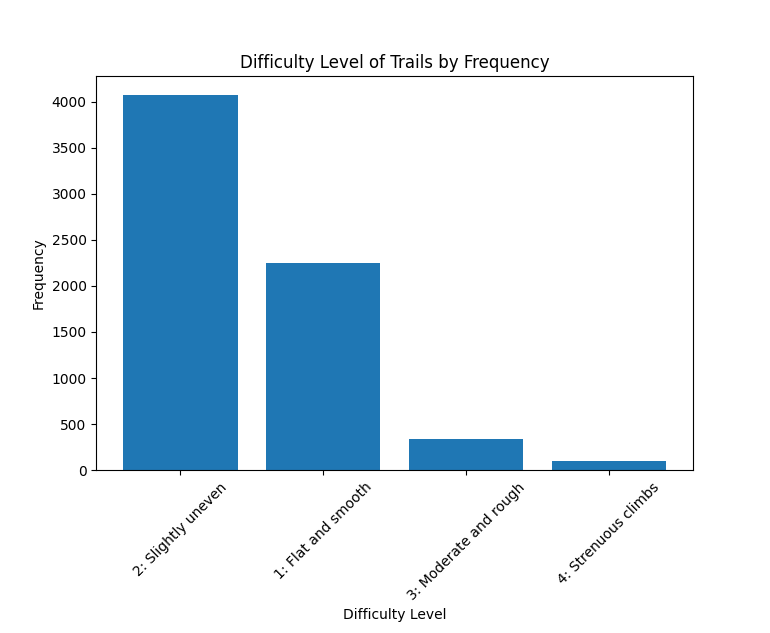
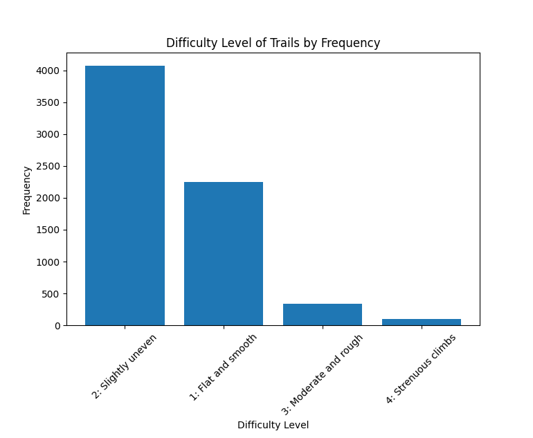
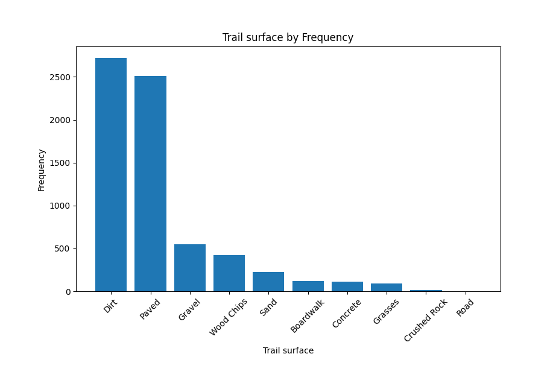
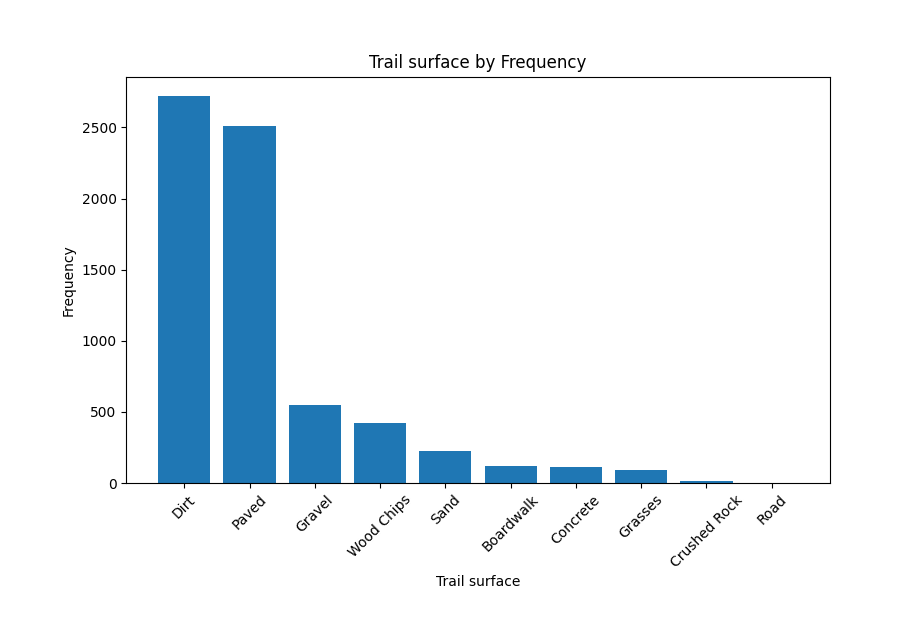
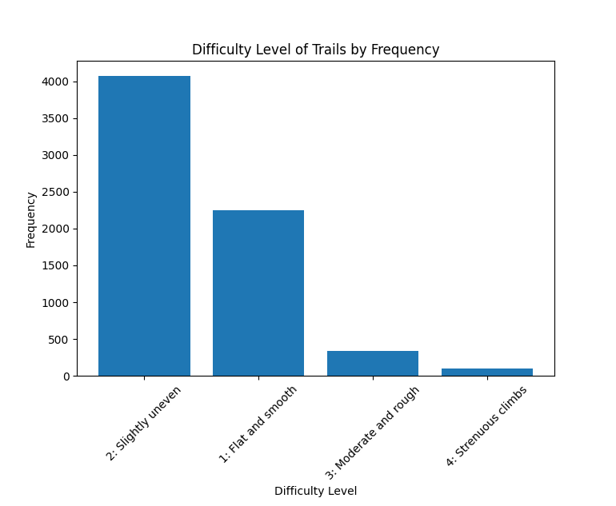
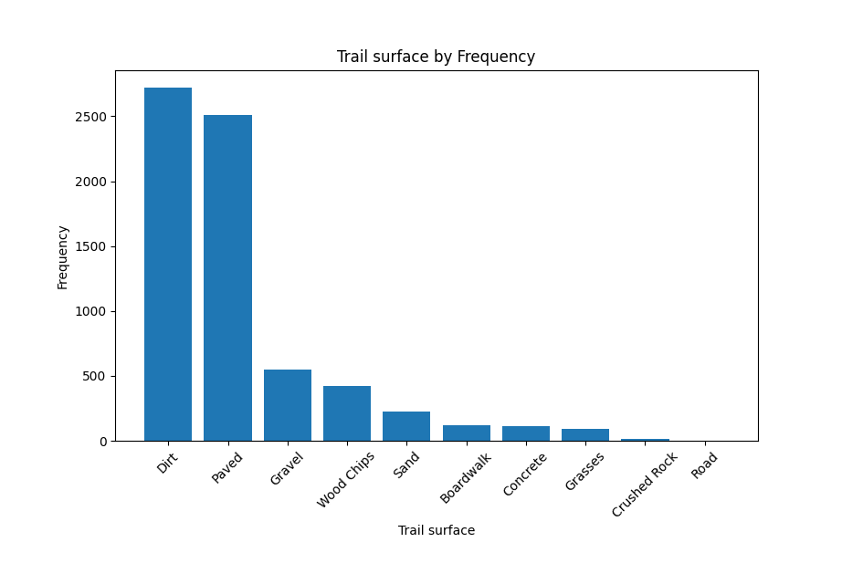

Exploratory Data Analysis and Visualization
Quantitative Variables
| Variable | Min | Q1 | Median | Mean | Q3 | Max |
|---|---|---|---|---|---|---|
| Width (ft) | 3 | 3 | 7 | 6 | 9 | 9 |
| Year | 2013 | 2014 | 2014 | 2016 | 2021 | 2025 |
Ordinal Variables
Development
- Class V: Fully Developed — 2101
- Class III: Developed/Improved — 1971
- Class IV: Highly Developed — 1950
- Class II: Minor Developed — 681
- Class I: Undeveloped — 70
Difficulty
- Slightly uneven — 4074
- Flat and smooth — 2245
- Moderate and rough — 340
- Strenuous climbs — 96
Categorical Variables
Surface Type
- Dirt — 2720
- Paved — 2513
- Gravel — 548
- Wood Chips — 425
- Sand - 224
- Boardwalk - 117
- Concrete - 110
- Grasses - 93
- Crushed Rock - 16
- Road - 2
Parks with Most Observed Trails
- Pelham Bay Park — 761
- Van Cortlandt Park — 663
- Alley Pond Park — 515
- Prospect Park — 371
- Central Park - 277
Quantatative Variable Analysis:


Ordinal Variable Analysis:
 

Categorical Variable Analysis:
 


